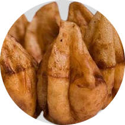
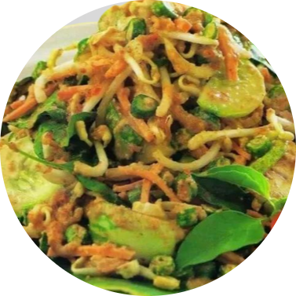
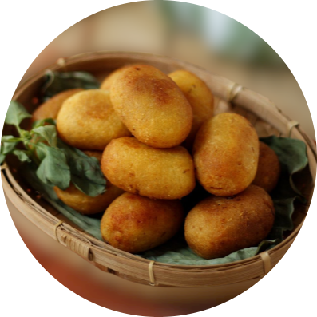
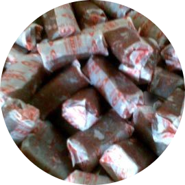
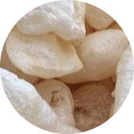

Resep Makanan
1. Burayot
Bahan-Bahan:
200 gram gula aren atau gula merah, Gula pasir secukupnya, 70 ml air, 1/2 sdt vanili bubuk, 1/2 sdt garam, 300 gram tepung beras, 2 lembar daun pandan, Minyak goreng secukupnya,Langkah-langkah:
1. Memasak gula dan bahan lainnya2. Mencampurkan adonan gula dengan tepung beras
3. Tiriskan burayot dengan sumpit bambu
4. Sajikan burayot selagi hangat
2. Karedok
Bahan-Bahan:
2 buah timun putih, 5 buah terong hijau, 5 helai kacang panjang, 3 lembar daun kol, 100 g tauge, bersihkan, 1 ikat daun kemangi, 2 sdm air asam Jawa, 100 ml air matang, kerupuk kanji/empingBumbu Halus:
100 g kacang tanah goreng, giling halus, 2 buah cabe merah keriting, 2 buah cabe rawit merah, 2 siung bawang putih, 3 cm kencur, 10 g gula merah, 1 sdt garam,Langkah-langkah:
1. Potong-potong timun ukuran kecil. Buang tangkai terong dan potong-potong tipis.2. Potong melintang kacang panjang dan daun kol 1 cm dan petiki daun kemangi.
3. Siapkan air matang dalam wadah, beri sedikit garam. Rendam sayuran sebentar di dalamnya lalu angkat dan tiriskan hingga kering.
4. Aduk Bumbu Halus dengan air asam dan air secukupnya hingga cukup kentalnya.
5. Masukkan sayuran segar yang sudah dipotong dan tauge, aduk hingga terbalur rata dengan bumbu.
6. Sajikan dengan topping kerupuk, jika suka
3. Combro
Bahan-Bahan:
1 kilogram singkong kupas, cuci bersih dan parut, 1 sendok teh garam 250 gram kelapa setengah tua kupas, parut memanjang Minyak secukupnya.Bumbu halus
3 siung bawang putih, 3 butir bawang merah 1 sentimeter kencur Isi comro 5 butir bawang merah, iris 5 siung bawang putih, iris 2 buah cabai merah besar, iris 1 sendok teh kaldu bubuk rasa ayam 1 sendok teh garam ½ sendok teh merica bubuk 1 sendok teh gula pasir 250 gram oncom, remas-remas 1 batang daun bawang, iris halus 25 lembar daun kemangiLangkah-langkah:
1. Pertama buat isian comro. Panaskan sedikit minyak, tumis bumbu halus bersama bawang merah, bawang putih, cabai merah, dan cabai rawit hingga harum.2. Masukkan kaldu bubuk dan oncom, kemudian masak hingga oncom matang.
3. Tambahkan garam, merica, gula pasir, dan daun bawang. Aduk rata.
4. Masukkan kemangi, aduk rata. Angkat dan sisihkan.
5. Kemudian siapkan adonan comro. Parut singkong, campur dengan garam dan kelapa parut, aduk rata. Bagi adonan menjadi 2 bagian. 6. Ambil 2 sendok makan adonan, bentuk bulat lonjong dan isi dengan 1 sendok makan isian comro dan bentuk kembali. Pastikan adonan tidak terlalu tebal dan tidak terlalu tipis. Sisihkan. 7. Goreng comro hingga matang dan berwarna cokelat keemasan,
angkat dan sajikan selagi hangat.
4. Dodol
Bahan-bahan
250 gram tepung ketan, 600 ml air santan, 250 gram gula merah disisir, 3 sendok makan gula pasir kalau mau lebih manis, 1/2 sendok teh garamLangkah-langkah:
1. Siapkan semua bahan yang dibutuhkan untuk membuat dodol ketan gula merah.2. Campurkan terlebih dahulu air santan dan tepung ketan. aduk rata menggunakan whisk dalam wadah sampai bahan tercampur dan tidak bergerindil, sisihkan.
3. Campurkan gula merah sisir, gula pasir, dan garam dalam wajan.
4. Tuang sedikit air santan yang telah dicampur tepung tadi saja untuk memudahkan gula larut.
5. Masak dengan api sedang sampai gula merah dan gula pasir benar-benar larut.
5. Dorokdok
Bahan-Bahan:
Kulit sapi 1 kg, Garam 1/2 ons, Secukupnya bawang putih, Gula 1/4ons Secukupnya air kapurLangkah-langkah:
1. Bersihkan kulit sapi lalu masukkan ke dalam air kapur dan rendam kurang lebih 2 hari lamanya.2. Setelah itu, bersihkan bulu-bulu pada kulit sapi dengan cara di kerok menggunakan pisau sampai bersih.
3. Bentangkan kulit sapi dibawah terik matahari langsung dan jemur sampai kering.
4. Kemudian potong-potong kulit sapi yang sudah dijemur kering dan sisihkan.
5. Ulek halus bawang putih lalu tambahkan dengan garam dan gula, sisihkan.
6. Rebus kulit sapi yang sudah dipotong-potong dan tambahkan bumbu halus ke dalamnya, aduk merata dan tunggu sampai matang. Angkat dan tiriskan.
7. Potongan kulit sapi yang sudah direbus kembali dijemur sampai kering.
8. Goreng potongan kulit sapi rebus yang sudah dijemur kering dengan menggunakan api kecil sampai mekar. Angkat dan tiriskan.
9. Goreng kembali potongan kulit sapi yang sudah digoreng mekar dalam genangan minyak panas sampai matang sempurna. Angkat dan tiriskan. 10. Kerupuk kulit dorokdok khas Garut sudah selesai dibuat.